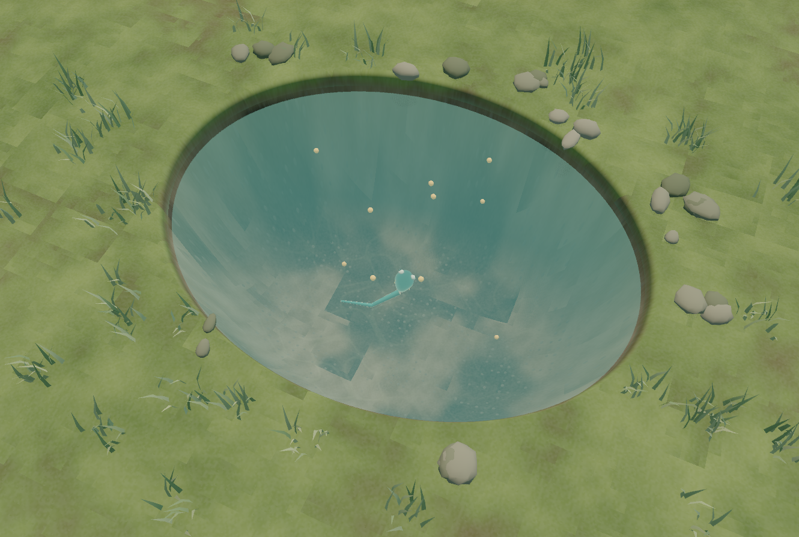

Drop a little food.
Click the open water. Pellets sink, drift with the current, and settle on the bottom. The swimmer decides which one to chase.
A little world that learns
Meet a tiny swimmer with a neural brain. Drop food into its pond, change the current, and let it figure things out.
Download for WindowsFree preview · Windows 10/11, 64-bit
NVIDIA accelerated. CPU learning included.

A pond. A swimmer. You.
Click the open water. Pellets sink, drift with the current, and settle on the bottom. The swimmer decides which one to chase.
Switch on a gentle current and watch food move through the pond. The creature has to turn, dive and control its tail to reach it.
Background swimmers practice your feeding locations and water conditions. New weights reach your creature after comparison checks. Learning can plateau; the app shows what actually changes.
Under the surface
One neural controller chooses the food. Another controls the body that has to reach it. The creature starts with learned swimming skills—and practices as you change its world.
Hand-written learning code in C++ and CUDA. No Python or PyTorch required.
Joint actuation, buoyancy and water drag turn neural decisions into motion.
Train on your computer and keep your progress saved locally. NVIDIA acceleration is optional.
An architecture walkthrough.
Live learning runs in the app.
The controllers receive numerical observations of food and body state. The swimming controller also receives target motion, so sinking and drifting food can influence its actions.
The browser diagram explains the architecture; it does not run a neural policy.
Take a look beneath the surface
This is an early, playable AI experiment. The swimmer starts with learned swimming skills and keeps practicing during play. Legs, physical growth and land movement are future stages.
Use Pause learning to pause practice while watching. Close normally to save; reopen to resume.
No. An NVIDIA RTX 30-series or newer GPU with a compatible driver enables CUDA learning in this build. Without it, the same sinking-food task uses genuine CPU PPO with 16 background swimmers. Learning speed varies with your hardware; it isn't promised to match GPU training. Keep your graphics drivers current.
No. The Windows installer includes the engine and native runtime. No extracting files or administrator account is needed. NVIDIA acceleration needs a compatible GPU and driver, but the CUDA toolkit isn't required. No Godot editor, Python or PyTorch installation is needed.
Yes. The swimming network receives PPO weight updates in background practice worlds influenced by your recent food drops and current setting. Separately evaluated improvements can be adopted by the visible creature without resetting its body. PPO update and adopted update are shown separately. Every update isn't necessarily an improvement.
It stays on your computer, in the CudaRL Arena folder under Godot's app data. The full learner and pond autosave every 30 seconds and on normal exit. CPU and CUDA have separate checkpoints. Learning stops when the app closes, and only one learning window should use a save at a time.
This free preview isn't code-signed, so Windows may show a publisher or reputation warning. Use the official GitHub release linked here and compare its SHA-256 checksum if needed. If you'd rather wait for a signed release, you can still explore the source.
This release is for Windows only. Mac and browser editions are future work. This website is the download page; it doesn't run a remote GPU or train your creature on a server.